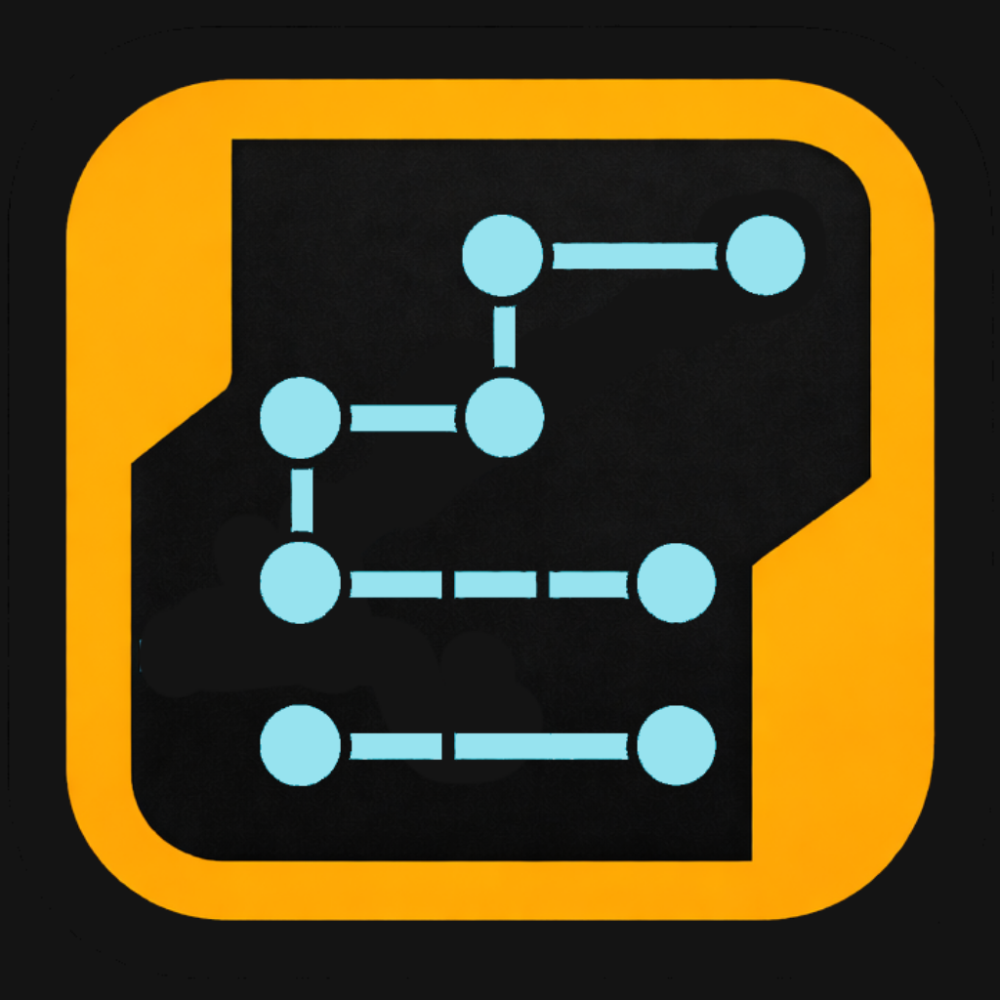

Quick Start
- Open your Audio Unit host.
- Add Pulseq as an AUv3 MIDI effect.
- Add a synth on another track.
- Route MIDI from Pulseq to the synth.
- Press play in the host transport.
Tip: If there is no sound, verify MIDI routing first.

AUv3 multi-stage MIDI sequencer for iOS. Supports 1 to 16 stages, with gate behavior, scale quantization, and MIDI CC modulation for elastic, evolving patterns.